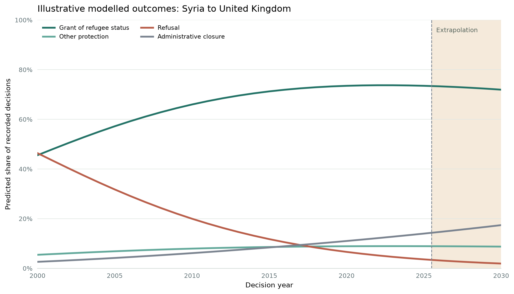
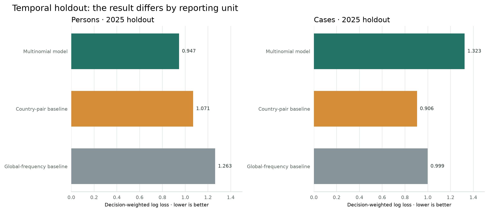
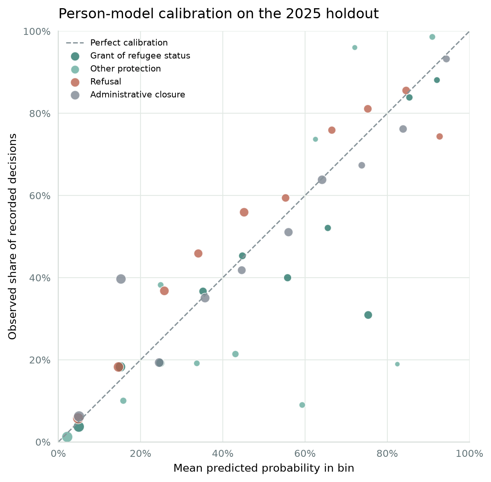

What an asylum-outcome model can—and cannot—say
Turning aggregate UNHCR decision histories into probabilities without mistaking them for an individual applicant’s odds.
A statistical model can summarise patterns in recorded asylum decisions. It cannot tell us what will happen to a particular person. That distinction is central to this project: the model estimates a distribution across four recorded outcomes for a country of origin, a country of asylum and a decision year. Those probabilities describe aggregate decision patterns—not an individual claim’s chance of success.
Open the interactive report to explore a country pair and year. The browser app runs from the committed model coefficients; this article explains how to read its output and where its limits lie.
Four outcomes, two reporting units
The model distinguishes grants of refugee status, other protection, refusals and administrative closures. The four probabilities sum to one. Grant and other protection can also be combined, and the report shows protection conditional on a substantive decision so closures remain visible rather than disappearing from the main distribution.
UNHCR reports both persons and cases. A case may contain more than one person, and these units are not interchangeable. The model fits them separately; it never converts one into the other. It uses counts as likelihood weights rather than expanding each aggregate record into a row for every person or case.
A modelled curve, not a series of observed rates
The first chart shows one illustrative route, Syria to the United Kingdom, using the person-based model. It includes fitted estimates for 2000–2025 and shades the five-year extrapolation window after the final data year. The historical line is not a forecast: the production model was fitted using the full snapshot, including those years. The shaded extension is a projection of learned trends, not a prediction that policy, conflict or decision practice will remain unchanged.

The model combines regularised origin-country, asylum-country and country-pair effects with a linear year trend and origin- and destination-specific trends. It pools the authorities and procedural stages present in the source because those are not model inputs. Country effects therefore describe historical associations; they do not establish causes.
Performance depends on the reporting unit
The model was tested on 2025, a year held out from parameter selection and fitting. For persons, it achieved a decision-weighted log loss of 0.9467, compared with 1.0707 for a historical country-pair baseline and 1.2632 for a global-frequency baseline, across 2,375,264 recorded decisions. That is an encouraging result on this one temporal holdout, not proof of general forecasting superiority.
The case-based result is different. Its log loss was 1.3232, worse than both the country-pair baseline (0.9060) and global-frequency baseline (0.9991), across 46,738 recorded decisions. The app labels case-based estimates experimental. Lower log loss is better in both panels.

Calibration is not guaranteed by a good average score
The third chart compares predicted and observed shares within probability bins for the person-based 2025 holdout. Points on the dashed diagonal are calibrated on average; points away from it show where the observed share differed from the model’s mean probability. The bins are weighted by recorded decision counts, but the chart does not provide confidence intervals or measure uncertainty about policy or future events.

What the probabilities leave out
The source contains aggregate decision counts, not linked applicant histories. One person can receive multiple decisions, including on appeal, and the data do not identify those decisions as belonging to the same person. UNHCR also notes that appeal reporting is incomplete. Differences in stage, authority and coverage can therefore shape the observed mix.
Historical fitted estimates use a production model that includes the selected year. Future-year values extrapolate a linear time pattern for at most five years beyond 2025; they cannot anticipate changes in law, conflict, population or administrative practice. A probability should be read alongside the model’s coverage notes and the underlying evidence, never as an individual assessment.
Data and method
The model uses a fixed UNHCR aggregate snapshot for 2000–2025. It groups reported counts by origin, asylum country, decision year and unit. Non-country rows and zero-count groups are excluded and audited; the source data are not refreshed when the report is published. The 2025 test is a single temporal holdout, and confidence intervals are not provided.
Explore the interactive report · View the model code and reproducibility notes · UNHCR refugee statistics
UNHCR is the data provider and does not endorse this model. Source statistics remain subject to UNHCR’s terms of use. Independent analysis by Kathryn Hopkins.